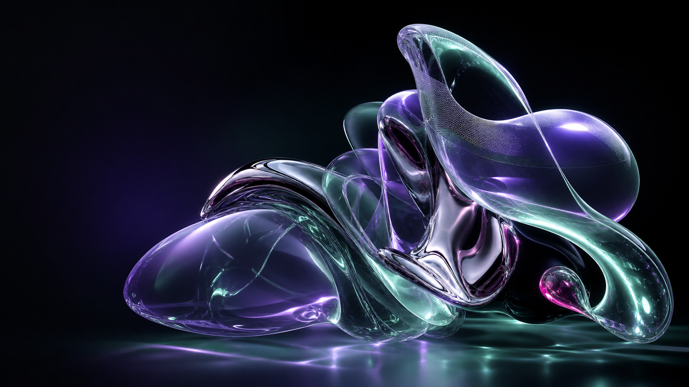

정밀한 타임라인 모션
여러 요소의 순서, 반복, 이징을 한 타임라인에서 통제합니다. 브랜드 사이트와 스크롤 연출에 가장 범용적입니다.
설치와 사용법
npm install gsap
import { gsap } from "gsap";
gsap.timeline({ repeat: -1 })
.to(".orb", { x: 180, duration: 1 })
.to(".orb", { scale: 1.4, duration: .35 });INTERACTIVE DESIGN TOOLBOX · LOCAL BUILD
13개 디자인·모션 도구의 실제 실행 결과, 추천 용도, 설치 명령과 최소 사용법을 한 HTML에 모았습니다.

IMG / 001 AI GENERATED ARTWORKMOTION & SCROLL
여러 요소의 순서, 반복, 이징을 한 타임라인에서 통제합니다. 브랜드 사이트와 스크롤 연출에 가장 범용적입니다.
npm install gsap
import { gsap } from "gsap";
gsap.timeline({ repeat: -1 })
.to(".orb", { x: 180, duration: 1 })
.to(".orb", { scale: 1.4, duration: .35 });작은 UI 인터랙션, SVG, 스프링 애니메이션을 짧은 코드로 만들 때 적합합니다.
npm install motion
import { animate } from "motion";
animate(".chip", { y: [-24, 24] }, {
type: "spring",
stiffness: 180,
repeat: Infinity
});PAGE SCROLL
PROGRESS
현재 페이지의 스크롤 감각과 좌측 진행률이 Lenis 데모입니다. 패럴랙스나 GSAP ScrollTrigger와 함께 사용합니다.
npm install lenis
import Lenis from "lenis";
import "lenis/dist/lenis.css";
const lenis = new Lenis({ autoRaf: true });
lenis.scrollTo("#target");WEBGL & CANVAS
카메라, 조명, 메시, 후처리를 갖춘 본격적인 3D 엔진입니다. 제품 3D와 복합 셰이더에 적합합니다.
npm install three
import * as THREE from "three";
const renderer = new THREE.WebGLRenderer({ canvas });
const mesh = new THREE.Mesh(
new THREE.IcosahedronGeometry(1, 2),
new THREE.MeshNormalMaterial()
);
scene.add(mesh);Three.js보다 낮은 추상화로 GLSL을 직접 다루기 좋습니다. 액체 배경이나 왜곡 효과에 알맞습니다.
npm install ogl
import { Renderer, Triangle, Program, Mesh } from "ogl";
const renderer = new Renderer({ canvas });
const geometry = new Triangle(renderer.gl);
const program = new Program(renderer.gl, { vertex, fragment });
renderer.render({ scene: new Mesh(renderer.gl, { geometry, program }) });HTML 이미지의 위치와 크기를 유지하면서 셰이더를 덧씌웁니다. 이미지 전환과 호버 왜곡에 편리합니다.
npm install curtainsjs
import { Curtains, Plane } from "curtainsjs";
const curtains = new Curtains({ container: "canvas" });
const plane = new Plane(curtains, element, {
vertexShader, fragmentShader, uniforms
});많은 스프라이트와 2D 오브젝트를 GPU로 그립니다. 인터랙티브 배너, 게임형 UI, 입자 효과에 적합합니다.
npm install pixi.js
import { Application, Graphics } from "pixi.js";
const app = new Application();
await app.init({ canvas, resizeTo: container });
const dot = new Graphics().circle(0, 0, 8).fill(0x8fffce);
app.stage.addChild(dot);VECTOR RUNTIMES
디자이너가 만든 `.riv` 파일과 상태 머신을 앱에서 제어합니다. 버튼, 캐릭터, 온보딩 UI에 좋습니다.
npm install @rive-app/webgl2
import { Rive } from "@rive-app/webgl2";
const r = new Rive({
src: "./assets/vehicles.riv",
canvas,
stateMachines: "bumpy",
autoplay: true
});Bodymovin으로 내보낸 JSON을 SVG·Canvas로 재생합니다. 설명 모션과 아이콘 애니메이션에 널리 쓰입니다.
npm install lottie-web
import lottie from "lottie-web";
lottie.loadAnimation({
container, renderer: "svg",
path: "/animation.json",
loop: true, autoplay: true
});JSON과 `.lottie`를 같은 플레이어로 재생하며 WASM, 상태 머신과 워커 렌더링까지 확장할 수 있습니다.
npm install @lottiefiles/dotlottie-web
import { DotLottie } from "@lottiefiles/dotlottie-web";
new DotLottie({
canvas, src: "/animation.lottie",
autoplay: true, loop: true
});LIQUID TOOLS
버튼과 컨테이너의 굴절·블러·틴트를 실시간 조절합니다. 버튼을 누르면 원본 데모가 이 페이지 안에서 열립니다.
<link rel="stylesheet" href="./vendor/liquid-glass-js/glass.css" />
<script src="./vendor/liquid-glass-js/container.js"></script>
<script src="./vendor/liquid-glass-js/button.js"></script>
const button = new Button({
text: "Glass", type: "pill", tintOpacity: 0.3
});배경을 굴절시키는 공유 WebGL 렌즈입니다. 여러 유리 패널, 틸트, 색수차와 GSAP·Lenis 연동에 적합합니다.
<script src="./vendor/liquidGL/scripts/liquidGL.js"></script>
liquidGL({
target: ".glass", refraction: 0.02,
aberration: 0.03, frost: 1, tilt: true
});고대비 이미지를 업로드해 WebGL 액체 금속 모션을 만들고 PNG·MP4로 내보냅니다.
cd vendor/liquid-logo
python -m http.server 8000
# 권장 입력
- 배경이 단순한 고대비 PNG
- 깨끗하고 굵은 로고 실루엣
- Randomize 후 세부 파라미터 조절QUICK DECISION
실제 서비스에는 필요한 렌더링 엔진만 선택하세요. 이 페이지는 비교를 위해 전부 설치한 실험실입니다.